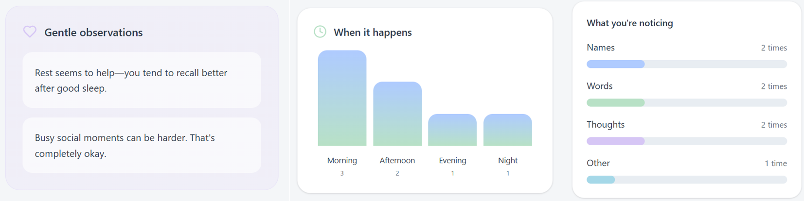
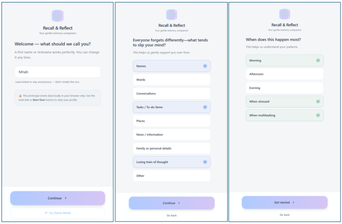
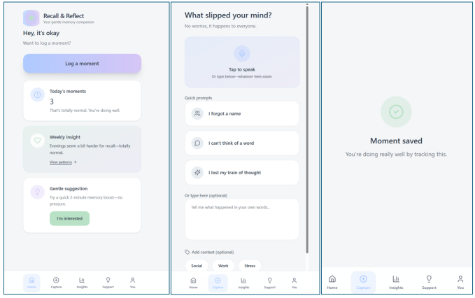
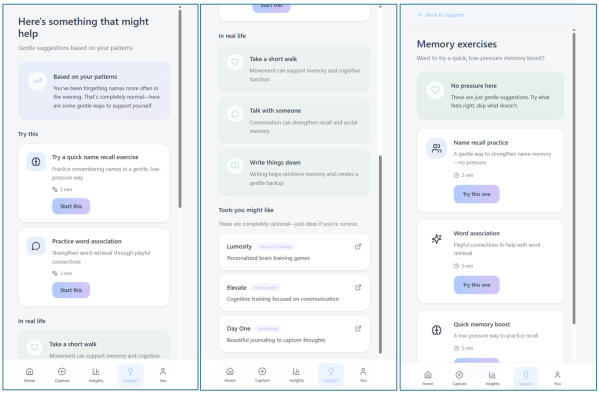
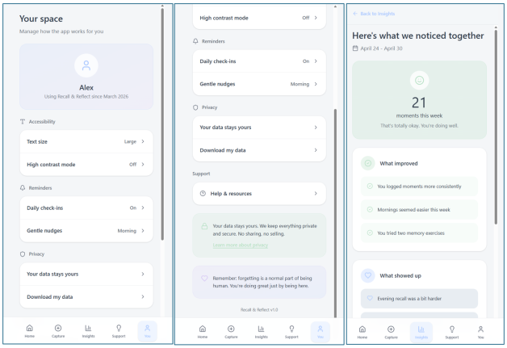
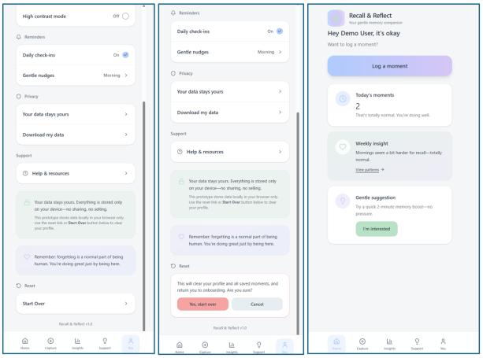

AI Product Design & Mobile UX
Recall & Reflect: AI Memory Companion
Designed a high-fidelity mobile app prototype that uses AI to help users capture, reflect on, and strengthen everyday memories through personalized daily check-ins and memory exercises.
Responsibilities
User Needs Research
Defined user needs and the problem space through research focused on memory capture, reflection habits, and emotional barriers to consistent journaling.
User Flow Design
Designed end-to-end user flows for daily check-ins, moment logging, AI weekly insights, and guided memory exercises.
High-Fidelity Prototyping
Created high-fidelity mobile app screens and interactive prototypes in Figma to validate navigation, task flow, and interface clarity.
AI Feature Design
Developed AI-assisted suggestion and insight features that supported reflection without feeling intrusive, clinical, or surveillance-like.
Usability Iteration
Iterated on designs based on usability feedback, including simplifying moment capture and adding a satisfying confirmation state.
Accessibility Support
Considered typography, contrast, tap-target sizing, and plain language to support a calm and accessible mobile experience.

Overview
Helping users capture and strengthen everyday memories
Recall & Reflect is an AI-powered mobile memory companion designed to help users capture fleeting everyday moments, reflect on patterns over time, and strengthen recall through guided exercises.
The app addresses the growing need for intentional memory practices in a fast-paced digital world, offering a calm, supportive experience personalized to each user.
Service Value
Making reflection easier, calmer, and more consistent
The value of Recall & Reflect comes from reducing the effort required to save meaningful moments. Instead of asking users to write long journal entries, the app uses quick prompts, AI-supported reflection, and guided exercises to help users build memory habits over time.
Minute maximum target for completing a daily check-in or logging a meaningful moment.
Primary app areas: Home, Your Space, Reflect, and Exercises.
Accessibility-focused design requirements for contrast, readability, and interaction sizing.

Problem & Goals
Supporting meaningful memory capture without adding pressure
Many people struggle to hold on to meaningful everyday moments, including small wins, emotional insights, and daily experiences that fade quickly without intentional capture.
The goal was to design an app that felt low-friction for daily journaling, surfaced useful reflections automatically, and offered gentle AI-driven nudges without feeling intrusive or clinical.
Low-Friction Capture
Users needed a fast way to log moments without feeling like they had to write a full journal entry.
Supportive AI
AI suggestions needed to feel helpful, transparent, and emotionally safe rather than overly automated or invasive.
User Scenario
Open the App
The user arrives at the Home screen and sees a calm daily check-in prompt designed for quick reflection.
Log a Moment
The user captures a small memory, emotional insight, or daily win using a short guided prompt.
Receive AI Support
The app offers an optional AI-assisted suggestion or reflection nudge based on the user’s saved patterns.
Review Weekly Insights
The user views a weekly summary that highlights positive observations, recurring themes, and memory patterns.
Practice Recall
The user completes a guided memory exercise to strengthen recall and build a consistent reflection habit.

My Role
Designing the product experience from concept to prototype
As the UX Designer and prototype developer, I led the end-to-end design process from problem framing through high-fidelity prototyping.
I defined user personas, mapped core task flows, designed the screen architecture, and crafted the AI suggestion and weekly insight features that personalize the experience.
Avery Chen
Busy young professional
Avery wants to remember small wins and emotional moments but struggles to keep a consistent journaling routine.
Goals
- Log meaningful moments quickly
- Reflect without pressure
- Notice patterns over time
Maya Thompson
Mindfulness-focused user
Maya wants a calm tool that helps her reflect on daily experiences and strengthen recall through guided practice.
Goals
- Build a gentle memory habit
- Use supportive AI insights
- Practice memory exercises

Discovery & Constraints
Balancing emotional support, speed, and privacy
Discovery began with identifying the emotional and cognitive barriers to consistent journaling. Key constraints included keeping the daily check-in to under two minutes, ensuring AI suggestions felt supportive rather than surveillance-like, and designing for one-handed mobile use.
Accessibility considerations shaped typography, contrast, and tap-target sizing throughout the interface.
Emotional Safety
The app needed to encourage reflection without guilt, pressure, or overly clinical language.
Mobile Ease
Core actions needed to support one-handed use, clear primary actions, and quick task completion.
Privacy Transparency
AI personalization needed to be clearly explained so users understood how suggestions were generated.
Key Features
Daily Check-In and Moment Capture
The daily check-in flow gives users a simple way to capture everyday memories without writing long journal entries. Smart defaults and a single primary action keep the experience low-friction.
AI Weekly Insight Summaries
Weekly insights help users notice patterns, emotional themes, and positive moments over time. The summary was reordered to lead with supportive observations based on usability feedback.
Guided Memory Exercises
The exercise library gives users structured ways to strengthen recall, revisit past moments, and practice reflection in a calm, supportive format.

Information Architecture, User Flows & Prototypes
Organizing the app around quick capture and guided reflection
The app is organized into four primary areas: Home for daily check-ins and recent moments, Your Space for personal settings and AI profile transparency, Reflect for weekly insights and pattern summaries, and Exercises for guided memory strengthening activities.
Three primary flows were designed: logging a moment, reviewing an AI-generated weekly insight summary, and completing a memory exercise. Each flow was optimized with smart defaults and a single primary action per screen.
Prototype Coverage
High-fidelity prototypes covered the daily dashboard, moment capture flow, AI insight cards, Your Space settings, and memory exercise library.
Requirements & Acceptance Criteria
Designing measurable standards for a calm AI experience
Design requirements specified a maximum two-tap path to log a moment, WCAG AA color contrast compliance, a consistent soft visual language, and AI suggestion copy that passed a plain language readability check. Privacy considerations required that all AI personalization be transparently communicated in the Your Space section.
Prototype Walkthrough
Interactive app demo and project report
The live app demo presents the Recall & Reflect mobile experience, including the daily check-in flow, AI-supported reflection, weekly insights, and memory exercise features.

Analytics, Iteration, Outcomes & Next Steps
Refining the experience through usability feedback
Two rounds of usability testing were conducted with five participants each. Key iterations included simplifying the moment-capture prompt, reordering the weekly insight summary to lead with a positive observation, and adding a “Moment saved” confirmation screen to provide satisfying closure.
The prototype successfully demonstrated a low-friction, AI-assisted memory journaling experience. Participants responded positively to the weekly insight summaries and the memory exercise library.
Prepare engineering handoff with detailed component specifications.
Plan integration for the AI suggestion engine and personalization logic.
Expand accessibility auditing for screen reader compatibility and mobile interaction patterns.
Next Steps
Next steps include preparing engineering handoff materials, documenting component behavior, planning AI suggestion engine integration, and expanding accessibility testing for screen reader compatibility.
Future iterations would include more personalization controls, deeper privacy messaging, and additional usability testing with users who have different journaling habits and comfort levels with AI.
Learnings
This project strengthened my ability to design emotionally supportive AI product experiences that balance personalization, transparency, and user control.
I also learned how important microcopy, confirmation states, and low-friction flows are when designing a habit-building mobile app.